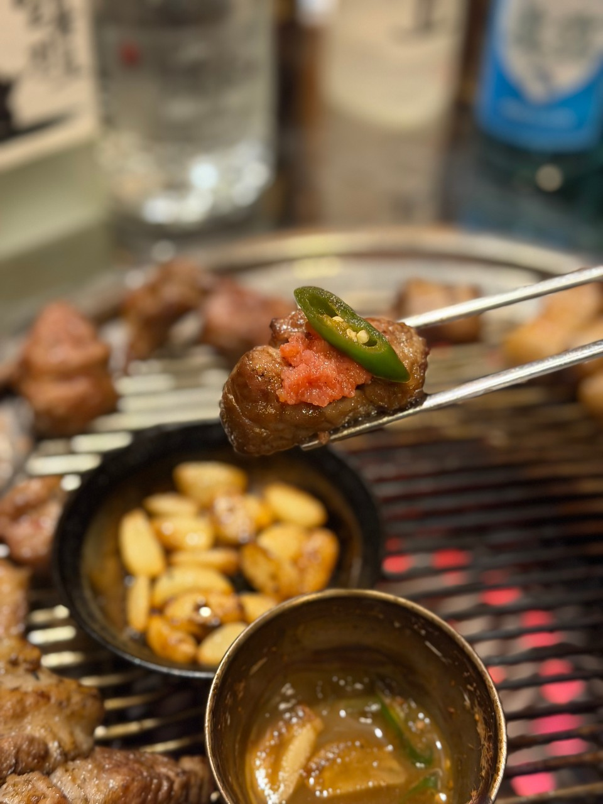
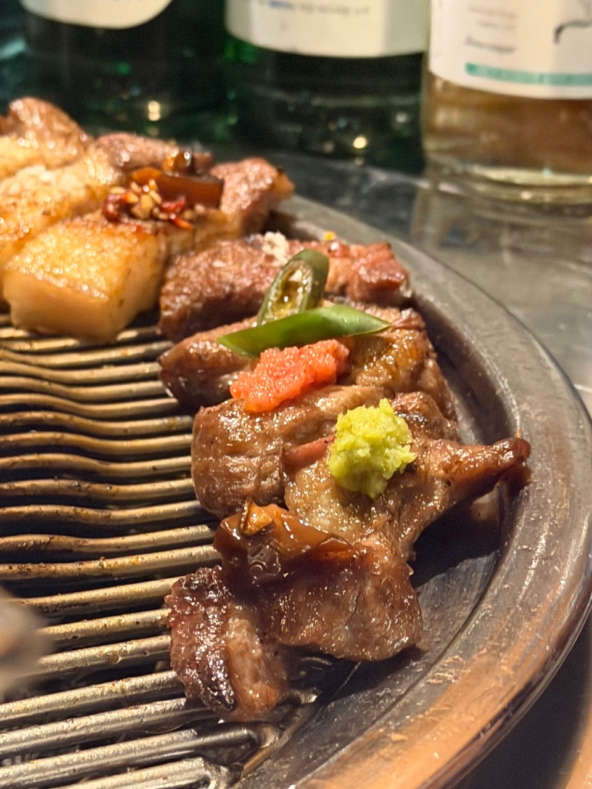
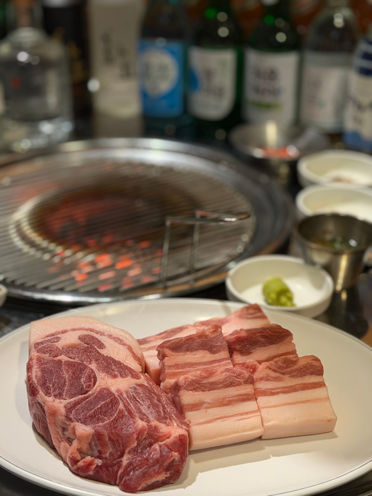
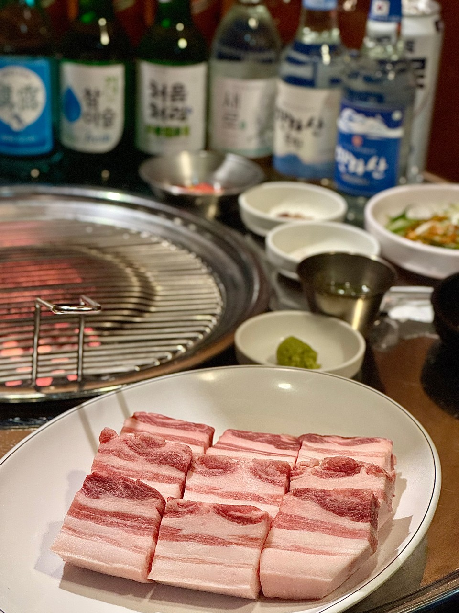
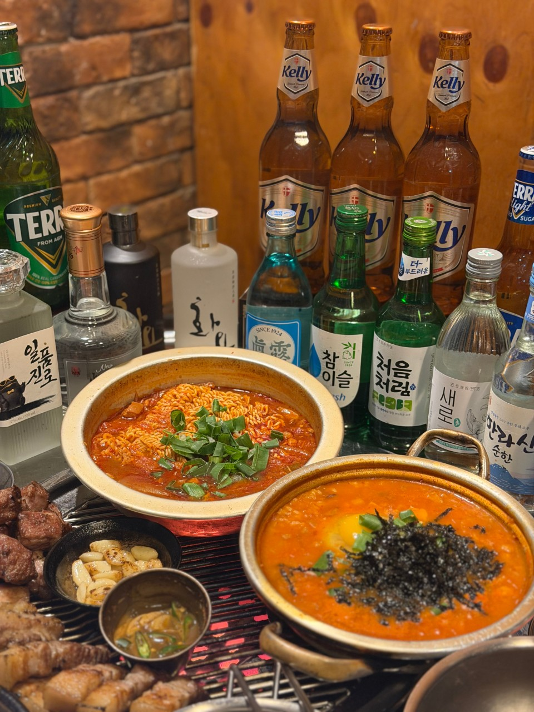
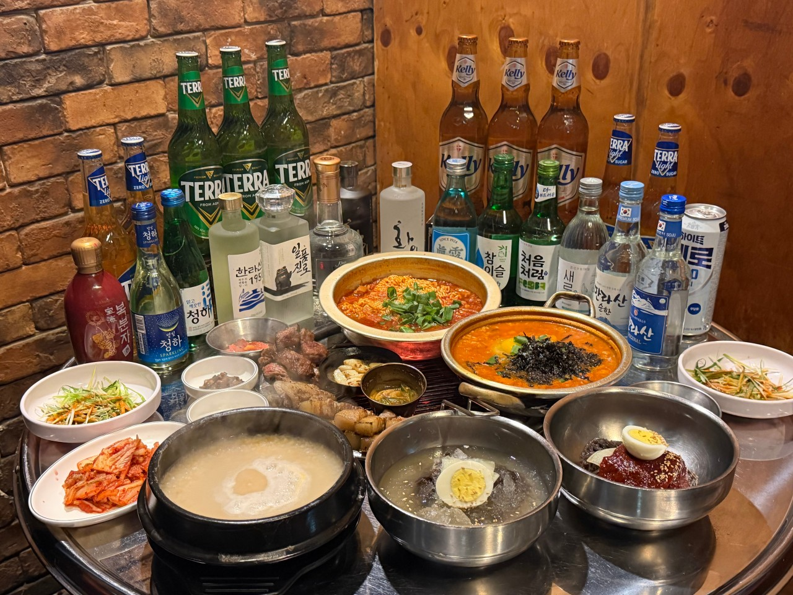

메뉴와 먹는 법
첫 점부터 마지막 점까지.
제주 근고기를 연탄불 위에서 직접 구워 드립니다.
메뉴
지점별 가격이 다를 수 있습니다. [확정 필요: 지점별 가격 차이 및 적용 기준]
| 메뉴 | 양 / 안내 | 가격 |
|---|---|---|
| 제주근고기 | 600g | 57,000원 |
| 특목살 추가 | 400g | 40,000원 |
| 특오겹 추가 | 400g | 40,000원 |
| 꼬들목살 | 일 20인분 한정 | 18,000원 |
| 김치찌개 | — | 8,000원 |
| 김치짜글이국밥 | — | 10,000원 |
| 명란계란찜 | — | 5,000원 |
| 냉면 | — | 6,000원 |
| 뚝배기누룽지 | — | 6,000원 |
| 명란젓 추가 | — | 2,000원 |
[확정 필요: 메뉴별 원산지 표기]
세 가지 맛, 세 번의 즐거움
오늘의 한 점,
어떻게 드실래요?
곁들이고 싶은 맛을 골라 보세요. 첫 점은 소금부터 추천해요.

첫 번째 한 점
메뉴와 먹는 법 더 보기 ↗소금으로 담백하게.
잘 구운 고기에 소금을 살짝.
첫 점은 고기 본연의 맛부터 느껴 보세요.
처음 오셨다면
제주근고기 600g은 2~3인 기준입니다. 드시는 양에 따라 추가 메뉴를 골라 주세요.
- 01 · 소금
첫 점은 소금과 함께 고기 맛을 느껴 보세요.
- 02 · 멜젓
다음 점은 멜젓에 곁들여 보세요.
- 03 · 명란
명란과 함께 또 다른 한 점을 즐겨 보세요.
특목살·특오겹은 각각 400g 단위로 추가 주문할 수 있습니다.
한 상을 즐기는 장면




